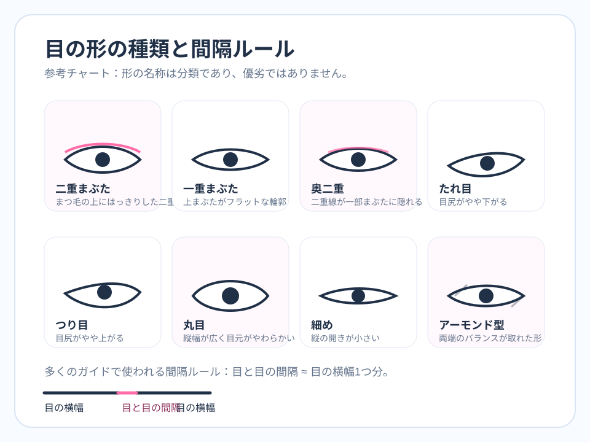

Pillar 4 Support Page
目の形 8種類完全ガイド｜一重・二重・丸目・アーモンド型を見分ける方法
目の形は「魅力を決める順位」ではなく、見え方の特徴を整理するための言葉です。このページでは、一重・二重・奥二重・垂れ目・つり目・丸目・細目・アーモンド型という8つの表現を、中立的な観察ポイントとしてまとめます。AIが実際に読んでいるのは、まぶたの名称そのものではなく、目幅、開き、目尻角度、眼間距離、眉との距離です。
目元の入力品質を確認する
片目だけ影に入る、半目になる、アイラインで目尻位置が強調されると、目の形ラベルよりも先に測定値がブレます。まずは写真条件をそろえられているかを簡単に確認してください。
目の形8種類はどう見分ける？
一重、二重、奥二重は、主に上まぶたの折り返しの見え方で分かれます。垂れ目とつり目は目尻の角度、丸目と細目は縦方向の開き、アーモンド型は両端の絞られ方と縦横バランスで説明されます。つまり8種類のラベルは、別々の軸が混ざってできています。まぶたのタイプと目尻角度は同じ軸ではないため、「二重の垂れ目」「一重のアーモンド型」のような重なりも普通に起こります。
このラベルの重なりを理解すると、検索でありがちな「この形は高スコア」「この形は不利」という読み違いを避けられます。AIはラベルを推測するのではなく、目頭、目尻、上下まぶたの点から数値を出しているだけです。だから、同じ二重でも目幅や眼間距離が違えばスコアの出方は変わりますし、同じ丸目でも写真角度が変われば結果は動きます。
眼間距離と片目幅はなぜよく語られるのか
目の比率解説で最も有名なのが、「両目のあいだの距離は片目1個分に近いとバランスが良い」という目安です。これは美の絶対法則ではなく、中央の余白と左右バランスを説明しやすい基準として広まっています。眼間距離が広く見えると、顔中央があっさり見えたり、幼さが出たりすることがあります。狭く見えると集中感が出たり、強い印象に寄ったりすることがあります。
ただし、眼間距離は近距離自撮りやレンズ歪みの影響を受けやすい指標でもあります。だから AI の結果を見るときは、「骨格がこうだ」と決めるのではなく、「この撮り方だと広く読まれやすい」と解釈するほうが安全です。

一重・二重・奥二重は何が違う？
一重は上まぶたの折り返しが表面に出にくく、二重は折り返し線が比較的はっきり見えます。奥二重はその中間で、折り返しが見えるけれど可動域や角度で隠れやすいタイプです。どれが優れているというより、光とメイクで境界線の見え方が変わりやすいかどうかが違います。AIでは、この境界線がはっきり見えると上まぶたの輪郭が取りやすく、目の開き量が安定して見えることがあります。
逆に、一重や奥二重でも、眼球の見え方、白目の明るさ、目頭と目尻の差、眉との距離が整っていれば十分に魅力的に読まれます。まぶたの種類だけで魅力や価値を決める読み方は、このサイトの方針では採用しません。
丸目・細目・アーモンド型はどこを見る？
丸目は縦方向の開きが大きく、黒目の上下が見えやすい傾向があります。細目は横長で、上下の開きが控えめです。アーモンド型は目頭と目尻が自然に絞られ、縦横のバランスが比較的整って見えやすい形を指します。これらの分類も固定ではなく、笑顔になると丸く見えたり、アイラインでアーモンド寄りに見えたりします。
AIでは eye aspect ratio と目尻角度がこれらの見え方に関わります。つまり、骨格だけでなく表情やメイクの影響をかなり受ける領域です。
目の形を活かして写真で読み違いを減らすコツ
目元でブレを減らしたいなら、正面寄り、柔らかい前光、両目が同じ明るさになる構図、前髪で片眉を隠しすぎないことが基本です。アイラインを強めた写真とナチュラルな写真を比べるときは、目の形が変わったというより、ランドマークの取り方が変わった可能性があります。
より広い文脈では、目元は輪郭や眉との関係で初めて安定して読めます。全体のパーツ連動を知りたい場合は 顔のパーツ完全解説 に戻り、髪型やメイクの調整へ進みたい場合は 顔型に合う髪型・メイク も参考にしてください。
FAQ
一重だとスコアは低くなりますか？
低くなると決まっているわけではありません。AIは目幅、開き、眼間距離、明るさなどを組み合わせて読むため、まぶたの種類そのものを順位として扱うのは不正確です。
丸目は有利ですか？
丸目は親しみやすく見える場面がありますが、どの形が有利かは写真文脈と文化差によります。ラベルよりも、どの条件で自然に読まれるかを見るほうが役立ちます。
目の形はメイクで変わりますか？
骨格が変わるわけではありませんが、見え方はかなり変わります。アイライン、涙袋、まつ毛、眉で目尻角度や開きが違って見えるため、AI結果にも影響します。